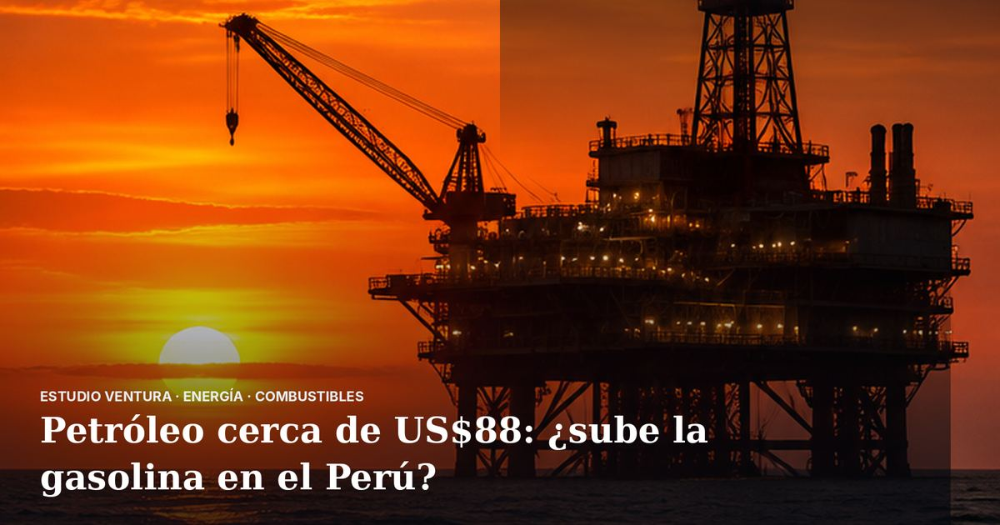

Petróleo cerca de US$88: ¿sube la gasolina en el Perú?

El petróleo cerró la semana del 13 de noviembre de 2026 con el WTI en alrededor de US$88,56 por barril y el Brent en US$95,84, según reportes de prensa financiera. La cifra importa en el Perú porque el país importa la mayor parte de sus combustibles.
01Qué pasó
Los reportes atribuyen los movimientos del mercado a factores como la tensión en Medio Oriente, la decisión de la OPEP+ de no tocar su producción en diciembre y las señales de la economía global. Los precios semanales vienen oscilando con fuerza: el Brent llegó a registrar una caída semanal de más de 16% la semana anterior. Conviene revisar los precios en Bloomberg o Reuters antes de citarlos.
02Ángulo Perú
Cuando el barril cambia en el mercado internacional, Petroperú y las demás refinerías ajustan sus precios de lista, y eso puede trasladarse al precio en el surtidor, al transporte, al flete y, al final, a la canasta básica. El efecto no es inmediato ni uniforme: depende del combustible, de los inventarios y de los márgenes de cada eslabón.
03Ángulo legal (FEPC)
El Fondo de Estabilización de Precios de los Combustibles (FEPC) es el mecanismo con el que el Estado amortigua las variaciones fuertes del precio de algunos combustibles. Según la prensa, su reactivación ha sido discutida en 2026 y el gremio de hidrocarburos señala una deuda del Estado con las empresas de alrededor de S/990 millones, lo que condiciona su sostenibilidad. La pregunta de fondo es si el fondo tendrá recursos suficientes si el precio internacional sigue subiendo. Si tu empresa depende de combustibles, revisa tus contratos de suministro y de transporte: cláusulas de reajuste de precio y de pass-through pueden marcar la diferencia.
Fuentes: reportes de prensa (EnergyNow, Yucatán, euribor.com.es) sobre el cierre semanal del 13-11-2026; Andina, Infobae, Proactivo y Energiminas sobre el FEPC. Información referencial; no constituye asesoría legal ni de inversión.